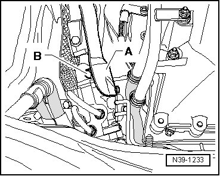
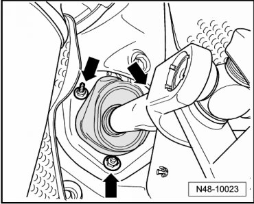
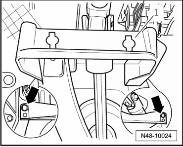
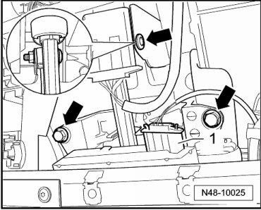
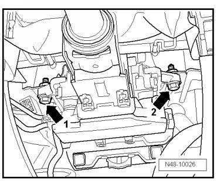
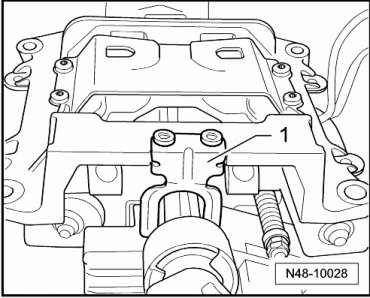
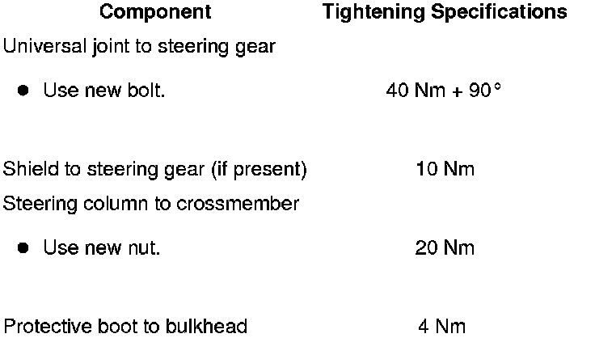

Steering Column
Steering Column
The steering column is delivered only as a complete replacement part. Service is not possible.
Removing
CAUTION!
Before starting work on electrical equipment and removing steering wheel, the following conditions must be fulfilled:
• Disconnect battery ground (GND) cable.
• Wheels must be located in straight ahead position.
If these notes are not observed, the airbag system may not function properly during vehicle operation!
- Set the wheels to the straight ahead position.
- Place selector lever in the "N" position and switch ignition off.
- Remove airbag unit.
- Remove steering wheel.
- Remove footwell cover.
- Remove steering column switch.
- Raise vehicle.
- If present, remove shield - A - from steering gear (2 bolts).

- Remove bolt - B - for universal joint at steering gear and remove universal joint from steering gear.
- Carefully slide lower shaft into upper shaft until stop.
With 5.0L Diesel Engine
- Loosen steering gear and slide to left.
Continuation for All
- Remove three nuts - arrows - for the protective boot.

On some engine versions, the upper nuts are also accessible from above through engine compartment.
- Remove brake light switch (F).
- Remove bracket - 1 - - arrows -.

- Disconnect connector - 1 - on vehicles with electrical steering column.

- Disconnect remaining harness connectors and disconnect wires from retainers left and right of steering column.
- Remove bolts - arrows -.
- Remove bolt - 1 - and finally bolt - 2 -.

- Carefully remove steering column.
Upper and lower part of steering column must not be separated without being marked.
This may lead to rattling noises during later driving operations if the mesh section is not in its original installation position.
- If the protective boot is to be removed. Refer to --> [ Protective Boot ] Protective Boot.
The retainer - 1 - must not be removed. It serves as a transport protection.

Installing
Installation is the reverse of removal, with special attention to the following:
- When replacing the mechanical steering column, the handle for steering column must also be replaced.
- Place the steering column on the cross member.
- Attach all bolts and fasten by hand.
- Tighten bolts.
Tightening Sequence

- Tighten bolts - 1 to 4 - to tightening specification in sequence illustrated.
- Tighten nut - 5 - to tightening specification.
- Attach universal joint to pinion gear of steering gear and tighten.
- Install protective boot correctly and tighten.
If a new steering column was installed, the electrical steering column lock must be adapted via Vehicle Diagnosis, Testing and Information System (VAS 5051).
- To do so, select "Immobilizer" in "Guided Functions ", then select "adapting electrical steering column lock".
- Perform basic setting for steering angle sensor (G85) using vehicle diagnosis, testing and information system (VAS 5051).
Tightening Specifications
